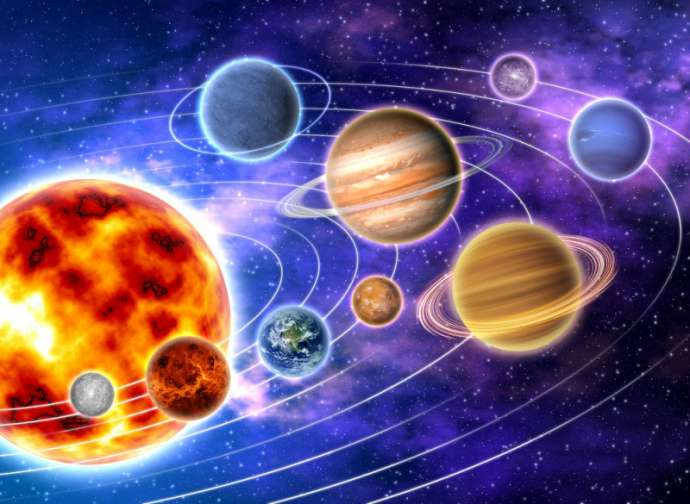
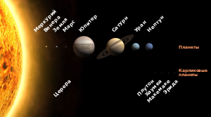
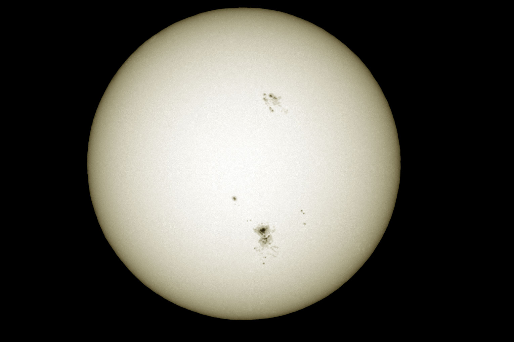

 Солнечная система — планетная система, включает в себя центральную звезду — Солнце — и все естественные космические объекты, вращающиеся вокруг Солнца. Она сформировалась путём гравитационного сжатия газопылевого облака примерно 4,57 млрд лет назад. Общая масса Солнечной системы составляет около 1,0014 M☉. Большая часть её приходится на Солнце; оставшаяся часть практически полностью содержится в восьми отдалённых друг от друга планетах, имеющих близкие к круговым орбиты, лежащие почти в одной плоскости — плоскости эклиптики. Из-за этого наблюдается противоречащее ожидаемому распределение момента импульса между Солнцем и планетами (т. н. «проблема моментов»): всего 2 % общего момента системы приходится на долю Солнца, масса которого в ~740 раз больше общей массы планет, а остальные 98 % — на ~0,001 общей массы Солнечной системы. Четыре ближайшие к Солнцу планеты, называемые планетами земной группы, — Меркурий, Венера, Земля и Марс — состоят в основном из силикатов и металлов. Четыре более удалённые от Солнца планеты — Юпитер, Сатурн, Уран и Нептун (также называемые газовыми гигантами) — намного более массивны, чем планеты земной группы. Крупнейшие планеты Солнечной системы, Юпитер и Сатурн, состоят главным образом из водорода и гелия; меньшие газовые гиганты, Уран и Нептун, помимо водорода и гелия, содержат в составе своих атмосфер метан и угарный газ. Такие планеты выделяются в отдельный класс «ледяных гигантов». Шесть планет из восьми и четыре карликовые планеты имеют естественные спутники. Юпитер, Сатурн, Уран и Нептун окружены кольцами пыли и других частиц.
 В Солнечной системе существуют две области, заполненные малыми телами. Пояс астероидов, находящийся между Марсом и Юпитером, схож по составу с планетами земной группы, поскольку состоит из силикатов и металлов. Крупнейшими объектами пояса астероидов являются карликовая планета Церера и астероиды Паллада, Веста и Гигея. За орбитой Нептуна располагаются транснептуновые объекты, состоящие из замёрзшей воды, аммиака и метана, крупнейшими из которых являются Плутон, Седна, Хаумеа, Макемаке, Квавар, Орк и Эрида. В Солнечной системе существуют и другие популяции малых тел, такие как планетные квазиспутники и троянцы, околоземные астероиды, кентавры, дамоклоиды, а также перемещающиеся по системе кометы, метеороиды и космическая пыль. Солнечный ветер (поток плазмы от Солнца) создаёт пузырь в межзвёздной среде, называемый гелиосферой, который простирается до края рассеянного диска. Гипотетическое облако Оорта, служащее источником долгопериодических комет, может простираться на расстояние примерно в тысячу раз дальше гелиосферы. Солнечная система входит в состав галактики Млечный Путь.
Центральным объектом Солнечной системы является Солнце — звезда главной последовательности спектрального класса G2V, жёлтый карлик. В Солнце сосредоточена подавляющая часть всей массы системы (около 99,866 %), оно удерживает своим тяготением планеты и прочие тела, принадлежащие к Солнечной системе. Четыре крупнейших объекта — газовые гиганты — составляют 99 % оставшейся массы (при этом большая часть приходится на Юпитер и Сатурн — около 90 %).
Большинство крупных объектов, обращающихся вокруг Солнца, движутся практически в одной плоскости, называемой плоскостью эклиптики. В то же время кометы и объекты пояса Койпера часто обладают большими углами наклона к этой плоскости. Все планеты и большинство других объектов обращаются вокруг Солнца в одном направлении с вращением Солнца (против часовой стрелки, если смотреть со стороны северного полюса Солнца). Есть исключения, такие как комета Галлея. Самой большой угловой скоростью обладает Меркурий — он успевает совершить полный оборот вокруг Солнца всего за 88 земных суток. А для самой удалённой планеты — Нептуна — период обращения составляет 165 земных лет. Большая часть планет вращается вокруг своей оси в ту же сторону, что и обращается вокруг Солнца. Исключения составляют Венера и Уран, причём Уран вращается практически «лёжа на боку» (наклон оси около 90°). Для наглядной демонстрации вращения используется специальный прибор — теллурий. Многие модели Солнечной системы условно показывают орбиты планет через равные промежутки, однако в действительности, за малым исключением, чем дальше планета или пояс от Солнца, тем больше расстояние между её орбитой и орбитой предыдущего объекта. Например, Венера приблизительно на 0,33 а.е. дальше от Солнца, чем Меркурий, в то время как Сатурн на 4,3 а.е. дальше Юпитера, а Нептун на 10,5 а.е. дальше Урана. Были попытки вывести корреляции между орбитальными расстояниями (например, правило Тициуса — Боде), но ни одна из теорий не стала общепринятой.